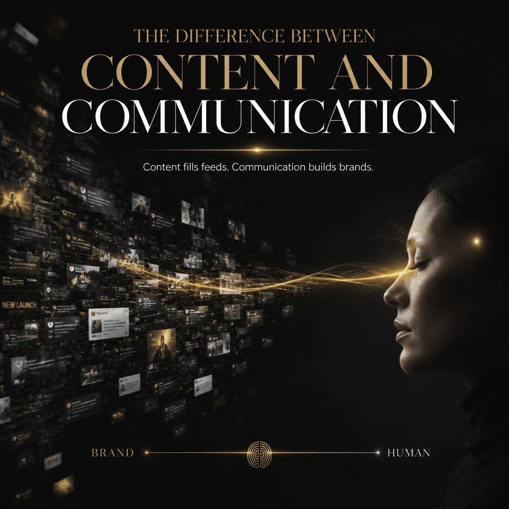

Did you know? Every day, over 500 hours of video are uploaded to YouTube every minute. Add Instagram Reels, TikTok, LinkedIn videos, and countless brand campaigns to the mix, and one thing becomes clear:
The internet isn't suffering from a lack of content. It's suffering from a surplus of it.
Yet despite brands investing more time, money, and resources into content than ever before, most videos never achieve the results they were created for. Viewers scroll past them. Engagement remains low. Messages get lost. And opportunities disappear before they even have a chance to make an impact.
The reality is harsh: Creating content has never been easier, but earning attention has never been harder.
Today's audiences are overwhelmed with choices. Within seconds, they decide whether your content deserves their attention or another swipe. In fact, studies show that a significant percentage of viewers abandon videos within the first few moments if they don't immediately see value.
So why do some brands capture attention, build loyal audiences, and stay memorable, while others fade into the endless scroll?
The answer isn't creating more content. It's creating content people actually want to watch. And that's where everything changes.
Before we go any further, think about your own behaviour online.
- How many videos have you scrolled past today without watching?
- How many posts did you forget within seconds?
- How often have you clicked away from a video because it took too long to get to the point?
The truth is, your audience behaves the same way.
They're not comparing your content to your competitors alone. They're comparing it to every video, post, notification, and distraction competing for their attention at that exact moment.
That's why creating content is no longer enough.
The real challenge is creating content that earns attention, keeps it, and leaves a lasting impression.
Why Most Brand Content Gets Ignored
Most brands don't struggle because they lack ideas, creativity, or effort.
In fact, many businesses invest significant time and resources into creating content. They hire designers, work with video editors, build content calendars, and consistently publish across multiple platforms.
Yet despite all that effort, the results often fall short.
Views remain low. Engagement stagnates. Audiences scroll past without a second thought. And the content that took hours or even weeks to create disappears into the noise.
So why does this happen?
More often than not, it's because brands make a handful of common mistakes that quietly destroy engagement and audience retention before the message has a chance to land.
1. Weak Hooks: Losing Viewers Before the Story Begins
The first few seconds of any piece of content are the most important.
Whether it's a YouTube video, Instagram Reel, LinkedIn post, or brand video, audiences make an instant decision: stay or leave.
Unfortunately, many brands waste these crucial moments on logo animations, lengthy introductions, or generic statements that fail to create curiosity.
Your audience doesn't care who you are, at least not yet.
They care about what's in it for them.
A strong hook grabs attention immediately by presenting a problem, asking a compelling question, challenging a common belief, or promising a valuable outcome.
Because if you fail to earn attention in the first few seconds, the rest of your content may never be seen.
2. No Storytelling: Information Doesn't Create Connection
Many brands focus heavily on sharing information.
They explain features.
They list services.
They talk about company achievements.
But information alone rarely creates engagement.
People remember stories because stories create emotion, context, and meaning. They help audiences see themselves in the message. Think about the content you remember most. Chances are, it wasn't just informative, it made you feel something.
The most effective brands don't just communicate facts. They communicate experiences, challenges, transformations, and outcomes. Because while information can educate, storytelling creates connection.
3. Poor Retention Strategy: Attention Needs to Be Earned Continuously
Capturing attention is only the first step. Keeping it is where most content fails.
Many videos start strong but quickly lose momentum. The pacing slows down, the value arrives too late, or the content becomes predictable. As a result, audience retention drops and viewers leave long before reaching the most important part of the message.
High-performing content is intentionally structured to maintain attention. It introduces curiosity, creates momentum, delivers value consistently, and gives audiences a reason to keep watching.
The best content doesn't just attract viewers. It guides them from beginning to end.
4. Platform Mismatch: One Size Doesn't Fit All
One of the biggest mistakes brands make is treating every platform the same. A video that performs well on YouTube may struggle on Instagram. A LinkedIn audience consumes content differently than a TikTok audience.
Each platform has its own culture, pacing, expectations, and user behaviour. Yet many businesses create a single piece of content and distribute it everywhere without adapting it for the platform. The result is content that feels out of place and fails to connect with the intended audience.
Effective content marketing isn't just about creating content. It's about creating the right content for the right audience on the right platform.
5. Selling Too Early: The Fastest Way to Lose Attention
One of the quickest ways to lose an audience is to make the content about yourself. Many brands begin with who they are, what they do, and why they're different.
But audiences aren't looking for a sales pitch. They're looking for value.
Before people care about your business, they need a reason to care about your content. The most effective brands lead with education, entertainment, insights, or solutions. They focus on helping first and selling second. When value comes before promotion, trust follows naturally.
And trust is what ultimately drives action.
The reality is simple: Most brand content doesn't fail because of poor production quality.
It fails because it isn't designed to capture attention, maintain engagement, and create a meaningful connection with the audience.
The good news?
Every one of these mistakes can be fixed. And that's where strategic content creation begins.
The Difference Between Content and Communication

Today, creating content is easier than ever.
Brands publish videos, social media posts, blogs, newsletters, and marketing campaigns every day. Content calendars are full, production tools are more accessible than ever, and AI can generate content at scale within minutes. Yet despite this abundance of content, very few brands are truly memorable.
Why?
Because creating content and communicating effectively are not the same thing. Many brands focus on what they want to say. Successful brands focus on what their audience needs to understand, feel, and remember. This is where the difference between content and communication becomes clear.
Content focuses on information. Communication focuses on transformation.
For example, a company might say:
"We offer motion graphics services for businesses."
That's content. It's factual, but it doesn't tell the audience why they should care.
Now compare it to:
"We help businesses turn complex ideas into clear visual stories that audiences can understand in seconds."
That's communication. The service hasn't changed. The message has. Instead of describing a feature, it highlights a benefit and a desired outcome.
A Real-World Example: Apple Doesn't Sell Phones
One of the most well-known examples of communication over content is Apple.
When Apple launches a new iPhone, they rarely focus solely on technical specifications like processor speed, camera sensors, or battery capacity.
Instead, they communicate what those features mean for the user. They don't just sell a camera. They sell the ability to capture memories. They don't just promote processing power.
They show how seamlessly people can create, work, and connect. The technology matters, but the story behind it is what makes people care. That's the difference between telling people what something is and helping them understand what it can do for them. The same principle applies to every brand, regardless of industry.
Your audience isn't looking for another list of features. They're looking for solutions, outcomes, and experiences that improve their lives or businesses. This is why brand storytelling has become one of the most powerful tools in modern marketing.
Remember:
- Stories create context.
- Stories create emotion.
- Stories create recall.
- And recall is what turns audiences into customers and customers into advocates.
At Motion Aura, we believe great content isn't measured by how much information it contains. It's measured by how effectively it communicates a message and moves people toward action.
Because at the end of the day, content fills feeds. Communication builds brands.
What Makes Content Worth Watching?
In a world flooded with content, getting noticed is difficult. Getting remembered is even harder.
Every day, audiences are exposed to thousands of messages competing for their attention. Some are ignored instantly. Some are consumed and forgotten. And a select few leave a lasting impression.
So what separates content that gets watched from content that gets skipped?
While there is no single formula for successful video content creation, the most effective brands consistently get five things right.
1. Attention: Earn It Before Asking for Anything
Attention is the starting point of every successful piece of content. Before viewers can understand your message, connect with your story, or take action, they need a reason to stop scrolling.
Yet many brands make the mistake of opening with company introductions, logos, or generic statements that fail to create interest. The best content earns attention immediately. It presents a problem, sparks curiosity, challenges an assumption, or promises a valuable outcome.
Think about Netflix trailers.
They don't explain the entire plot. They show just enough to make you want more. Great content works the same way. It earns attention first and delivers value second.
2. Story: People Remember Stories, Not Specifications
Facts inform. Stories persuade.
Most audiences won't remember every feature of your product or every statistic in your presentation. But they will remember a story that made them feel something. This is why brand storytelling has become such a powerful tool in modern marketing.
Consider Nike.
Nike doesn't primarily sell shoes. It sells determination, ambition, perseverance, and personal achievement. Every campaign tells a story about overcoming challenges and pushing limits. The products support the story, not the other way around. The same principle applies to every brand. When people connect with your story, they are more likely to remember your message.
3. Emotion: Engagement Begins With Feeling
People often believe they make decisions logically. In reality, emotion plays a significant role in what captures attention and drives action. Think about the content you share with friends. It's rarely the content that simply informs. It's the content that inspires, surprises, entertains, motivates, or resonates with you on a personal level. The most engaging content creates an emotional response, whether it's excitement, curiosity, empathy, trust, or inspiration.
Emotion transforms passive viewers into active participants. And active participants are far more likely to engage, remember, and take action.
4. Clarity: Confused Audiences Never Convert
One of the biggest mistakes brands make is trying to say too much at once. They overload content with features, technical details, industry jargon, and multiple messages.
The result?
Confusion. And confused audiences rarely take action. The best content is remarkably clear. It focuses on one core message and communicates it in a way that is easy to understand and remember.
A useful rule is this:
If your audience has to work hard to understand your message, you've already lost part of their attention.
Clarity creates confidence. And confidence creates action.
5. Consistency: Memorable Brands Show Up Repeatedly
Even great content rarely creates lasting brand recognition on its own. People remember brands through consistent exposure over time. Think about the brands you recognise instantly. It's not because you saw them once. It's because you've seen their messaging, visuals, tone, and stories repeatedly across different touchpoints.
Consistency builds familiarity. Familiarity builds trust. And trust builds preference.
The most successful brands don't just create great content occasionally. They create and communicate consistently, reinforcing the same values, message, and identity over time. Because being memorable isn't about one viral video. It's about showing up consistently enough that audiences remember who you are when it matters most.
Ultimately, content worth watching isn't created by accident. It's built on attention, storytelling, emotion, clarity, and consistency. When these five pillars work together, content becomes more than something people consume. It becomes something they remember.
How Motion Aura Helps Brands Stand Out
By now, one thing should be clear: Creating content is no longer enough.
To succeed in today's digital landscape, brands need content that captures attention, communicates clearly, and stays memorable long after the scroll.
That's where Motion Aura comes in.
We don't see ourselves as just another video marketing agency or content production partner. We believe great content sits at the intersection of strategy, storytelling, and execution.
Every project we take on is guided by a simple question:
How can we help this brand communicate more effectively?
The answer often looks different for every client, but the goal remains the same: creating content people watch and brands people remember.
1. Turning Raw Footage Into Engaging Experiences
Anyone can record a video. The challenge is keeping people engaged long enough for the message to make an impact. Through strategic video editing services, we transform raw footage into content that flows naturally, maintains attention, and delivers value at the right moments.
From pacing and structure to visual storytelling and audience retention, every edit is designed with the viewer in mind. Because a great video isn't just watched.
It's experienced.
2. Simplifying Complex Ideas Through Motion Graphics
Some ideas are difficult to explain using words alone. Whether it's a product demonstration, business process, technical concept, or marketing message, complexity often creates confusion. And confused audiences rarely engage.
Our motion graphics services help brands transform complicated information into clear, visually engaging content that audiences can understand quickly and remember longer.
When people understand your message, they're more likely to trust it. And when they trust it, they're more likely to act on it.
3. Expanding Reach With Platform-Ready Content
Modern audiences consume content differently depending on where they are. A viewer scrolling through Instagram has different expectations than someone watching a YouTube video or browsing LinkedIn.
That's why successful brands don't rely on a one-size-fits-all approach. We help businesses maximise the value of their content by creating short-form videos and platform-specific assets designed for how people consume content today. The result isn't just more content. It's more opportunities to reach the right audience in the right format at the right time.
4. Building Trust Through Brand Storytelling
People don't connect with businesses. They connect with stories. Behind every brand is a mission, a challenge, a vision, or a transformation worth sharing.
The brands that stand out aren't always the loudest. They're the ones that communicate their story most effectively. Through strategic brand storytelling, we help businesses create content that feels human, relatable, and memorable. Because trust isn't built through promotion alone. It's built through connection.
5. Aligning Content With Business Goals
One of the biggest mistakes businesses make is creating content without a clear purpose. Views without engagement mean little. Engagement without action means even less. Every piece of content should support a larger objective, whether that's building brand awareness, educating customers, generating leads, increasing retention, or strengthening audience relationships.
That's why content strategy is at the heart of everything we do. Before creating content, we focus on understanding the audience, the message, and the desired outcome. Because the best content doesn't just look good. It contributes to business growth.
6. More Than Content. A Competitive Advantage.
The digital landscape will continue to evolve. Platforms will change. Trends will come and go. Technology will make content creation easier than ever.
But one thing will remain constant:
Brands that communicate clearly, tell compelling stories, and earn attention will always have an advantage.
At Motion Aura, our mission is simple. To help brands cut through the noise, connect with their audience, and create content that delivers lasting impact. Not just content that gets seen. Content that gets remembered.
The Future Belongs to Memorable Brands
The future of content marketing won't be defined by who can create the most content. It will be defined by who can create the most memorable content.
We're entering an era where content creation is becoming faster, cheaper, and more accessible than ever before. AI-powered tools can generate blog posts, videos, graphics, social media captions, and marketing campaigns in a fraction of the time it once took.
For businesses, this is both an opportunity and a challenge.
On one hand, brands can produce content at an unprecedented scale. On the other, audiences are being exposed to more content than ever before. As the volume of content increases, competition for attention becomes even more intense.
This is one of the most important content marketing trends shaping the future of digital marketing. The barrier to creating content is disappearing. The challenge of earning attention is not.
Think about it this way.
If every brand has access to the same tools, the same platforms, and similar production capabilities, what becomes the real differentiator?
It isn't the quantity of content. It's the quality of the connection that content creates.
The brands that succeed in the coming years will be the ones that understand how to communicate clearly, tell compelling stories, and create experiences that audiences genuinely remember.
Because audiences don't remember every video they watch. They remember the ones that taught them something valuable. The ones that made them feel something.
The ones that solved a problem. The ones that stayed with them long after the content ended. This is where brand awareness through video becomes increasingly important.
Video has the unique ability to combine visuals, storytelling, emotion, and information into a format that captures attention and creates lasting impressions. When used strategically, it becomes more than a marketing tool, it becomes a vehicle for building recognition, trust, and loyalty.
For brands, the goal should no longer be to simply publish more. The goal should be to become more memorable. To create content that audiences recognise. Content that reflects a consistent message. Content that builds familiarity over time. Content that reinforces why your brand matters. As technology continues to evolve, attention will become one of the most valuable resources in business. And the brands that learn how to earn it, keep it, and convert it into meaningful relationships will have a significant advantage.
The future doesn't belong to the brands creating the most content. It belongs to the brands creating content people remember. And in a world overflowing with content, being remembered may become the most powerful marketing advantage of all.
Creating Content People Watch and Brands People Remember
The brands that stand out today aren't necessarily creating more content than everyone else. They're creating content with intention. Every video, post, and campaign serves a purpose. Every story strengthens their message. Every piece of content moves their audience one step closer to trust, recognition, and action.
That's the difference between creating content and building a brand.
As competition continues to grow and audiences become more selective about what they consume, visibility alone won't be enough. The brands that thrive will be the ones that consistently create value, communicate clearly, and remain memorable long after the scroll.
So before you create your next piece of content, ask yourself:
Will people simply see it, or will they remember it?
Whether you're a startup looking to establish your presence, a creator building a loyal community, or a business aiming to strengthen its market position, the objective remains the same:
Create content that earns attention. Build a brand that earns trust. If you're ready to transform your content from something people scroll past into something they engage with, remember, and act on, Motion Aura is ready to help.
Let's create content people watch and brands people remember.
Get a Free Video Retention Audit
We’ll break down your last video and show you exactly where viewers drop off and what’s causing it. No sales pitch. No generic feedback. Just clear, actionable insights you can use immediately. Delivered within 24 hours.
Get Free AuditWant to Go Deeper?
If you’re ready to turn your videos into high-performing assets:
Book a 20-minute strategy call with the MotionAura team. We’ll walk you through how to apply high-retention editing to your content and where the biggest opportunities for growth are. Better videos don’t come from better gear. They come from better decisions. And it starts with how you structure attention.